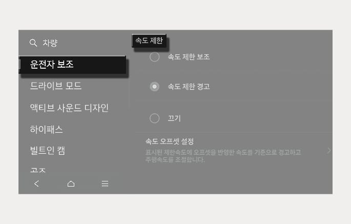

지능형 속도 제한 보조 설정
지능형 속도 제한 보조 기능을 설정합니다. 운전자 보조 → 속도 제한 을 차례로 선택하십시오.

2C_SpeedLimitSettings
-
속도 오프셋 설정: 제한속도의 오프셋을 조절합니다. 인식된 제한속도와 속도 오프셋 설정에서 설정한 오프셋 값을 더한 속도 보다 초과하는 시점에 제한속도 경고를 하거나 주행 속도 조절을 도와줍니다.
-
속도 제한 보조: 제한속도 및 부가 표지판 정보를 알려주고, 수동 속도 제한 보조 또는 스마트 크루즈 컨트롤의 설정속도를 변경하여 도로의 제한속도를 준수할 수 있도록 도와줍니다.
-
속도 제한 경고: 제한속도 및 부가 표지판 정보를 알려주고, 도로의 제한속도 보다 빠르게 주행하면 경고합니다. 수동 속도 제한 보조 또는 스마트 크루즈 컨트롤의 주행 속도 조절을 도와주지 않으므로 속도를 직접 조절해야 합니다.
-
끄기: 지능형 속도 제한 보조가 해제됩니다. 속도 제한 (
z ) 경고등이 표시됩니다.
시동을 껐다가 걸면 지능형 속도 제한 경고는 자동으로 켜집니다.
-
속도 제한 보조 및 경고 기능은 제한속도에 오프셋이 더해진 값을 기준으로 작동합니다. 인식된 제한속도에 맞춰 속도를 변경하거나 경고하도록 하려면 오프셋 값을 '0'으로 설정하십시오.
-
설정한 오프셋 값은 내비게이션 기반 스마트 크루즈 컨트롤에는 반영되지 않습니다.